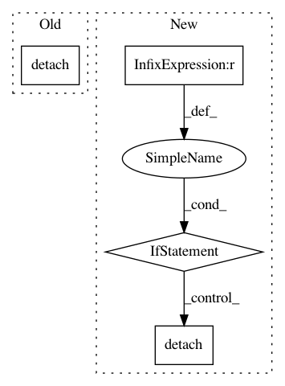

5eb95c2d8a5af8a16fba64b58684ed3e3a7d1ec8,src/sdk/pynni/nni/compression/torch/weight_rank_filter_pruners.py,L2FilterPruner,get_mask,#L2FilterPruner#Any#Any#Any#,153
Before Change
mask_weight = torch.gt(w_l2_norm, threshold)[:, None, None, None].expand_as(weight).type_as(weight)
mask_bias = torch.gt(w_l2_norm, threshold).type_as(weight)
return {"weight_mask": mask_weight.detach(), "bias_mask": mask_bias.detach()}
class FPGMPruner(WeightRankFilterPruner):
After Change
w_l2_norm = torch.sqrt((w ** 2).sum(dim=1))
threshold = torch.topk(w_l2_norm.view(-1), num_prune, largest=False)[0].max()
mask_weight = torch.gt(w_l2_norm, threshold)[:, None, None, None].expand_as(weight).type_as(weight)
mask_bias = torch.gt(w_l2_norm, threshold).type_as(weight).detach() if base_mask["bias_mask"] is not None else None
return {"weight_mask": mask_weight.detach(), "bias_mask": mask_bias}
In pattern: SUPERPATTERN
Frequency: 3
Non-data size: 4
Instances
Project Name: microsoft/nni
Commit Name: 5eb95c2d8a5af8a16fba64b58684ed3e3a7d1ec8
Time: 2020-03-17
Author: 38930155+chicm-ms@users.noreply.github.com
File Name: src/sdk/pynni/nni/compression/torch/weight_rank_filter_pruners.py
Class Name: L2FilterPruner
Method Name: get_mask
Project Name: microsoft/nni
Commit Name: b0c0eb7b1f2ac9a983c550ee971cea275463d8fc
Time: 2019-12-23
Author: lanny@mail.hfut.edu.cn
File Name: src/sdk/pynni/nni/compression/torch/builtin_pruners.py
Class Name: RankFilterPruner
Method Name: calc_mask
Project Name: microsoft/nni
Commit Name: 5eb95c2d8a5af8a16fba64b58684ed3e3a7d1ec8
Time: 2020-03-17
Author: 38930155+chicm-ms@users.noreply.github.com
File Name: src/sdk/pynni/nni/compression/torch/weight_rank_filter_pruners.py
Class Name: L1FilterPruner
Method Name: get_mask